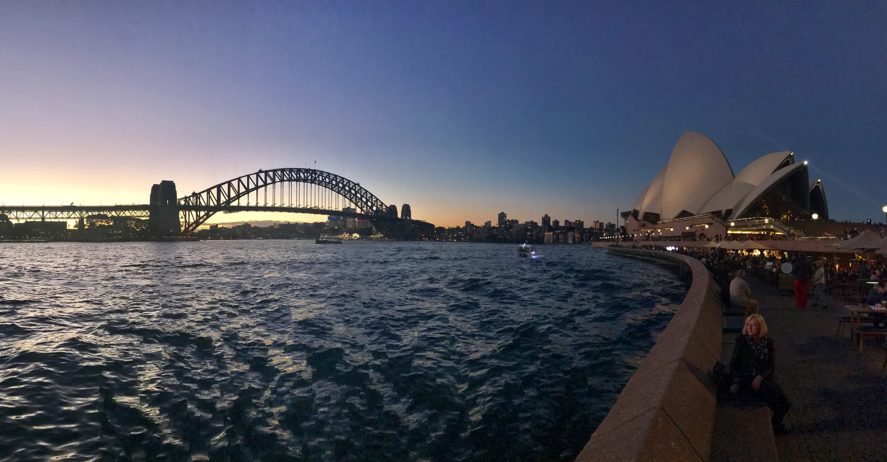

Identity & Travel History
- Current passport bio page.
- Former passport used during your stay in China, if available.
- Chinese visas, entry/exit stamps and residence permits, as applicable.
- Evidence explaining a name change or passport-number mismatch.
CHINA POLICE CERTIFICATE · COUNTRY GUIDE
A practical guide to obtaining a China Police Certificate (PCC) for Australian visa, migration, work, study, and other applications where overseas police clearance may be required.

China document support
Step-by-step guidance
Support for overseas applicants
Transparent, case-by-case review
Overview
A China police certificate may be requested for an Australian visa or migration application when your residence history and character-document checklist call for it. Check the requested period, issue date, format and deadline before applying.
The Department of Home Affairs character requirements and your visa subclass instructions determine which overseas checks are needed. Skilled, partner, permanent migration and work-related applications may have different requirements; a work or study application does not automatically require every applicant to obtain a China PCC.
A China PCC covers Chinese records; an AFP National Police Check covers Australian records. One does not replace the other. For China-side assistance, see our China Police Certificate Service. Global Attest is an independent document assistance provider, not Home Affairs, the AFP or a Chinese issuing authority.
Document Preparation
This is a preparation guide, not a nationwide mandatory checklist. Requirements depend on nationality, city, residence period and the local authority’s review.
Chinese citizens and former foreign residents follow different routes. Chinese citizens may need identity, hukou and local records. The Australian Consulate-General’s China guidance directs applicants to the local PSB Entry & Exit Office or a Chinese notary office. The competent office’s current requirements determine the route; missing records need an individual assessment.
Application Process
Review your Australian request, passport history and local checklist.
Apply through the competent local route; use a representative only where permitted.
Check identity details, residence coverage and the issued document.
Arrange translation and any separately required notarization or authentication.
Provide the certificate and translation in the format required for your Australian file.
Tell us your former cities, residence dates, current country and available documents. We review the local route before preparing authorization or coordinating a representative. Remote processing is not available through the same procedure everywhere.
Allow for identity checks, archive searches, local attendance requirements and document delivery. See applying after leaving China.
Translation conveys the document in another language. Notarization certifies the matter covered by the particular notarial act. An apostille authenticates origin-related matters such as a signature, seal or signing capacity; it does not prove the underlying facts or guarantee acceptance.
Home Affairs asks for English translations of non-English documents. Check the translator details and source-document format required for your visa. Notarization, apostille and consular legalization are separate steps, not automatic requirements for every Australian application. View PCC format samples and document legalization services.
Plan Your Application
Home Affairs’ general preparation guidance refers to police certificates issued in the 12 months before applying for a visa. Check the specific instructions for your application rather than treating this as a guarantee of acceptance or a rule for every Australian recipient.
We do not guarantee issuance, a fixed completion date or acceptance. Official character and visa decisions remain with the relevant authorities.
Your Questions
It depends on your visa subclass, residence history and any character-document request. Home Affairs may ask for overseas police certificates; not every work, study or visitor application has the same checklist. Review your own instructions and the period to be covered. A China PCC concerns Chinese records and is separate from an AFP National Police Check.
Start with the local route for the Chinese city where you lived. Your records, identity documents and authorization requirements determine whether an online or representative application is available. We can review the route and assist with preparation and coordination; some procedures still require personal attendance or additional records.
Possible records include your current passport, previous passport used in China, Chinese visas, residence permit where applicable, temporary residence registration and address history. Work or school records, an Australian document request and a power of attorney may help the local review. Additional materials depend on the city; this is not a nationwide mandatory checklist.
A visitor visa is not the same as a residence permit. Eligibility and evidence requirements must be checked with the competent local office using your nationality, stay dates and actual documents. For example, Beijing publishes specific residence-history conditions; those should not be assumed to apply identically elsewhere. We cannot guarantee that a certificate can be issued without the required local evidence.
Ask for an assessment before purchasing replacement records. Available passport copies or numbers, old visas, residence permits, registration forms, work or school records and address history may help explain your stay. They are not automatically accepted substitutes. The issuing authority decides whether the evidence is sufficient.
For Home Affairs visa submissions, non-English documents need an English translation. Its guidance asks for a NAATI practitioner number for translators in Australia; for translators outside Australia, it asks for their full name, address, phone number and relevant language qualifications. Check your subclass instructions and submit the source document and translation in the requested format. Other recipients may set their own requirements.
Not for every application. Confirm the certificate, translation and any certification requirements in your own checklist before arranging additional procedures. Notarization, apostille and consular legalization are distinct. An apostille authenticates origin-related matters, not the truth of the contents or eligibility for an Australian visa. It does not guarantee acceptance.
There is no single reliable processing time for all Chinese cities. Timing depends on records, identity checks, local procedures and authority workload. Authorization, translation, any requested notarization or authentication and international delivery can add time. We provide an estimate after reviewing the case, without promising issuance or a fixed date.
We provide document preparation, process guidance and local coordination where the applicable procedure permits it. Remote assistance does not remove steps that must be completed personally or official identity checks. Tell us your former Chinese cities, residence dates, current location and available records so that we can assess the practical route.
Ask the relevant office for the reason and retain evidence of your attempts where available. Inform Home Affairs or the requesting body promptly, follow its instructions and provide any explanation and supporting evidence it asks for. Do not assume that a personal declaration automatically replaces a police certificate. The receiving authority decides how to assess missing evidence; we cannot promise a waiver or visa outcome.
Related Case
A former Shanghai resident living in France needed a China PCC for a Canadian PR application, but historical visa, residence-permit and registration copies were unavailable. The published case describes authorization preparation and local coordination to address missing records. This is a China-side process example, not an Australian visa case.
The PCC and notarized English translation were completed in approximately 10 working days in that individual case. This is a historical outcome, not an estimate for an Australian application or a promise of issuance or acceptance.
Read the Full Case
Guangzhou: missing registration form and Shiyan: coordination with a former school describe other local record issues. These published cases also concern Canadian PR applications; they are not evidence of Australian visa approval or a universal China application route.
These are anonymized service records, not customer reviews. View all case studies or check your China PCC case.
Further Reading
Review local application options, authorization and missing records before planning a deadline.
Compare destination contexts without assuming the same rules apply.
Understand certificate terminology, issuing context and supporting records.
Guidance checked on 3 November 2026. Your visa subclass checklist and any later request take precedence. This page provides general China-side document information, not migration advice.
Sydney photograph: Kgbo, Wikimedia Commons, CC BY-SA 4.0. Resized and compressed to WebP; the adapted image is available under the same licence. Australian flag: Wikimedia Commons, public domain. Destination imagery is illustrative, not a client document or a photograph of an application.
Get personalized guidance on document preparation, application steps, and authentication requirements.